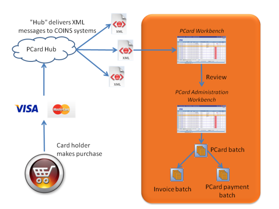

PCard Overview
For many contractors, especially those with substantial maintenance and facilities management operations, purchasing card (PCard) transactions represent a significant number of day-to-day business transactions, and these PCard transactions often represent a significant percentage of a contractor's total spend. As such they need to be included in any subsequent analysis of spend by either or by commodity.
PCard processing allows you to take PCard transaction data from an XML file, and create fully paid and costed invoices. This means that full details of individual purchases are automatically carried through to the accounts, contributing to figures, the Status Ledger and General Ledger. You can then and on these using all the standard features of .
The PCard Process

Pcards
- The card holder makes purchases using the PCard. They may be able to quote a point of sale reference which allows to cost the transaction automatically.
- Details of the transactions are passed to the card issuer, and then on to a PCard "hub".
- The "hub" processes the transaction data and delivers XML messages to the relevant system.
- treats these XML messages in the same way as eCommerce invoices. Each individual transaction appears on a PCard Workbench.
- The card user or an administrator fills in additional details of the transaction.
- The administrator then creates a batch of PCard transactions. When this batch is posted, automatically creates a invoice batch and a PCard payment batch.
Configuration
You will need to connect to the PCard "hub".
- For VISA, the hub is PCCL (Purchasing Card Consultancy Limited).